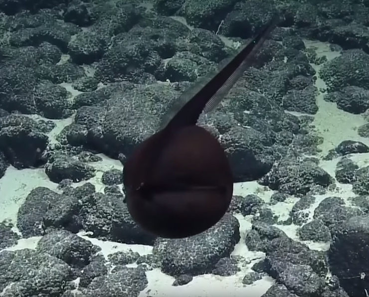
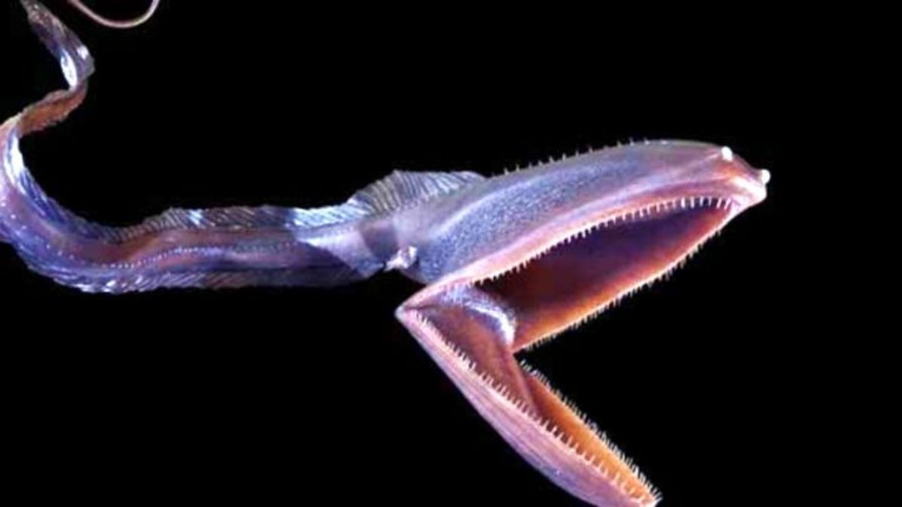

Estos pecez viven en zonas profundas y raramente es visto or los humanos
Su cuerpo se asemeja a las anguilas aunque no pertenezcan a ellas con tonalidades de marron oscuro o negro. Su cabeza con forma renangular tiene una boca con forma de pelicano.
tiene dientes pequeños que le hace dificil de cazar, con que desarollo su boca para hincharse al no tener hueso como un globo y tragar a la vitima entero.
pez pelicano hinchado
Eurypharinx pelecanoides